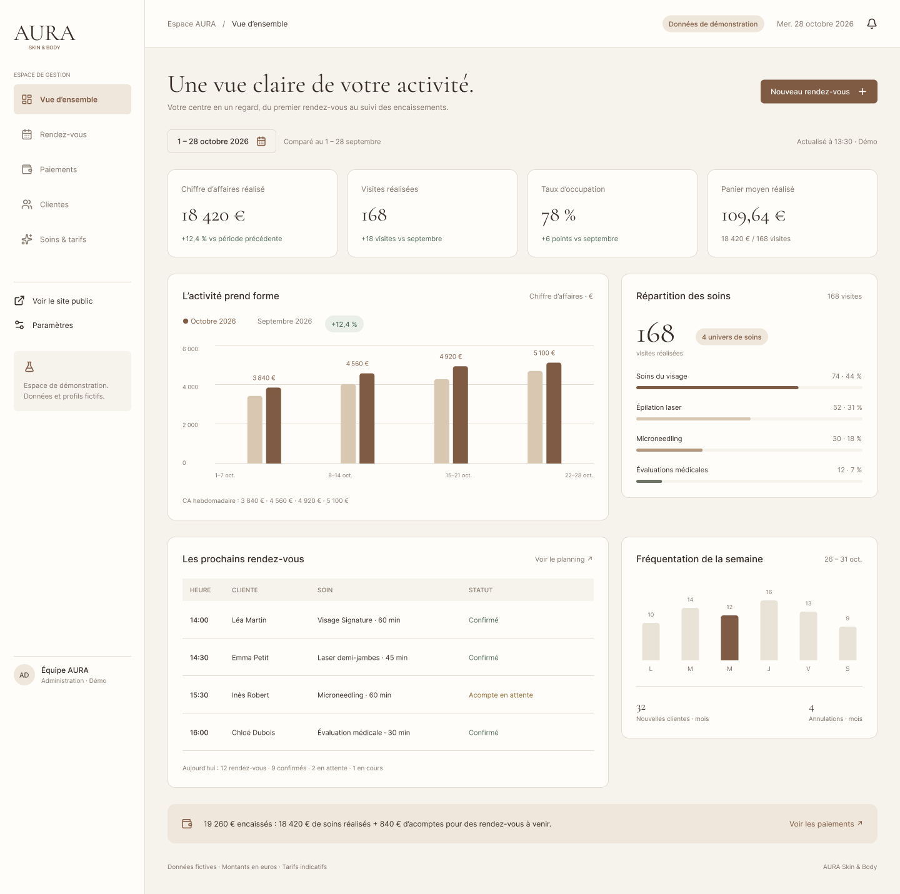

MaColoc.ma
Une plateforme de colocation qui réunit annonces, recherche multicritère, favoris et messagerie.
Moi, c’est Zineb. Je transforme les idées en applications web intuitives, avec autant d’attention pour ce qu’on voit que pour ce qui les fait fonctionner.
Disponible immédiatement · Java / Spring Boot · Angular
Bonjour, c’est Zineb.
Welcome to my studio!
Je transforme vos idées en applications web utiles, intuitives et soignées.
Trois projets, trois contextes. Le même objectif : créer des outils qui répondent à de vrais besoins.
Une plateforme de colocation qui réunit annonces, recherche multicritère, favoris et messagerie.
Une plateforme e-learning pour les enfants sourds ou malentendants, leurs parents et leurs enseignants.
Site vitrine, réservation en ligne et tableau de bord de gestion pour un centre d’esthétique.
Logique métier, API REST et gestion des données.
Des expériences claires, interactives et adaptées à chaque écran.
Des fondations cohérentes pour des applications utiles.
Une sélection de mes certificats. Chaque carte mène à la vérification officielle sur Coursera.
Je suis Zineb Ousmouh, développeuse full-stack basée au Maroc, diplômée d’un master en Ingénierie Informatique, Big Data & Cloud Computing à l’ENSET Mohammedia.
J’aime comprendre un besoin, démêler sa logique et lui donner une forme simple. Mon terrain de jeu : le développement web, les données et l’automatisation des tâches du quotidien.
Plateforme e-learning pour la Fondation Lalla Asmaa : API Node.js / PostgreSQL, authentification JWT, rôles RBAC et front React.
Ingénierie Informatique, Big Data & Cloud Computing.
Migration d’un back-end Java EE vers Spring Boot et front Angular pour l’application MaColoc.
Gestion du parc informatique, des comptes utilisateurs et des incidents via GLPI.

à l’usage.Un projet web, une automatisation ou une opportunité professionnelle. La conversation commence ici.
it.ousmouhzineb@gmail.com ↗Télécharger mon CV ↓